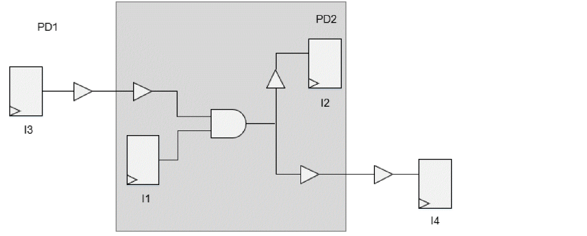

IPD Analysis Reporting
Due to the complexities involved in the identification of IPD logic, it may not always be possible to analyze only IPD paths during IPD GBA analysis - some non-IPD logic can also get analyzed, as part of GBA analysis.
For analysis of non-IPD paths, consider the following scenario:
- I3 to I2, I1 to I4 are the IPD paths (see figure below)
- I1 to I2 is a non-IPD path, though every cell in this path is part of another IPD path
-
I1 to I2 path will also get analyzed and reported by default
Figure -82 Non-IPD Path Analysis - Illustration

Tempus supports additional settings to filter these non-IPD paths during reporting.
The -ipd parameter of the report_timing command reports only the IPD paths in the design:
report_timing -ipd
The IPD analysis header section in the timing report indicates the crossings that exist in the IPD paths.
IPD Analysis {pd_PD1 -> pd_PD2(L) pd_PD2 -> pd_PD3(D)}
In the above example, there is transition from power domain PD1 to PD2 in the launch path (L), post the CPPR point and from PD2 to PD3 in the data path (D).
The following abbreviations are used to identify the type of crossings that exist in a path:
- CC for the common clock path
- L for the launch clock path
- C for the capture clock path
- D for the data path
Sample Report
Path 1: MET Setup Check with Pin Inst1/regx1/CP
Endpoint: Inst1/regx1/D (^) checked with leading edge of 'clk'
Beginpoint: Inst2/regx8/Q (^) triggered by leading edge of 'clk'
Path Groups: {clk}
Analysis View: low_low_v
Retime Analysis { GBA }
IPD Analysis { pd_PD1 -> pd_PD2(L) pd_PD2 -> pd_PD3(D)}
Other End Arrival Time 0.955
- Setup 0.271
+ Phase Shift 3.000
= Required Time 3.684
- Arrival Time 3.552
= Slack Time 0.132
Clock Rise Edge 0.000
+ Clock Network Latency (Prop) 0.000
= Beginpoint Arrival Time 0.000
Sample Scripts
Scope Creation
read_library <libs>
read_verilog <verilog files>
set_top_module <top name>
update_library_set -timing {list of libs} –append
Reading power information
read_power_intent / read_power_domain (CPF/UPF flow)
infer_pgv_power_intent (PGV flow)
set_analysis_mode -enable_ipd true
create_pg_net_group –group specification
set_ipd_rail_voltage –sweep/-exclude_voltage_signatures specification
create_ipd_configuration –bounded_corners
# specify bounding corner constraints
set_interactive_constraints_modes [all_constraints_modes -active]
source < bounding_corner constraints>
set_timing_derate -cell_delay 0.9 -delay_corner [all_delay_corners -active]
read_spef <spef files>
update_timing –full
write_ipd_scope <bounded_corners scope dir>
Scope Analysis
set_analysis_mode -enable_ipd true
read_ipd_scope <bounded_corners scope dir>
create_ipd_configuration –load_constraints –load_derates
update_timing -full
report_timing -ipdwrite_ipd_scope –include_derates –include_constraints <bounded_corners scope dir>
Return to top